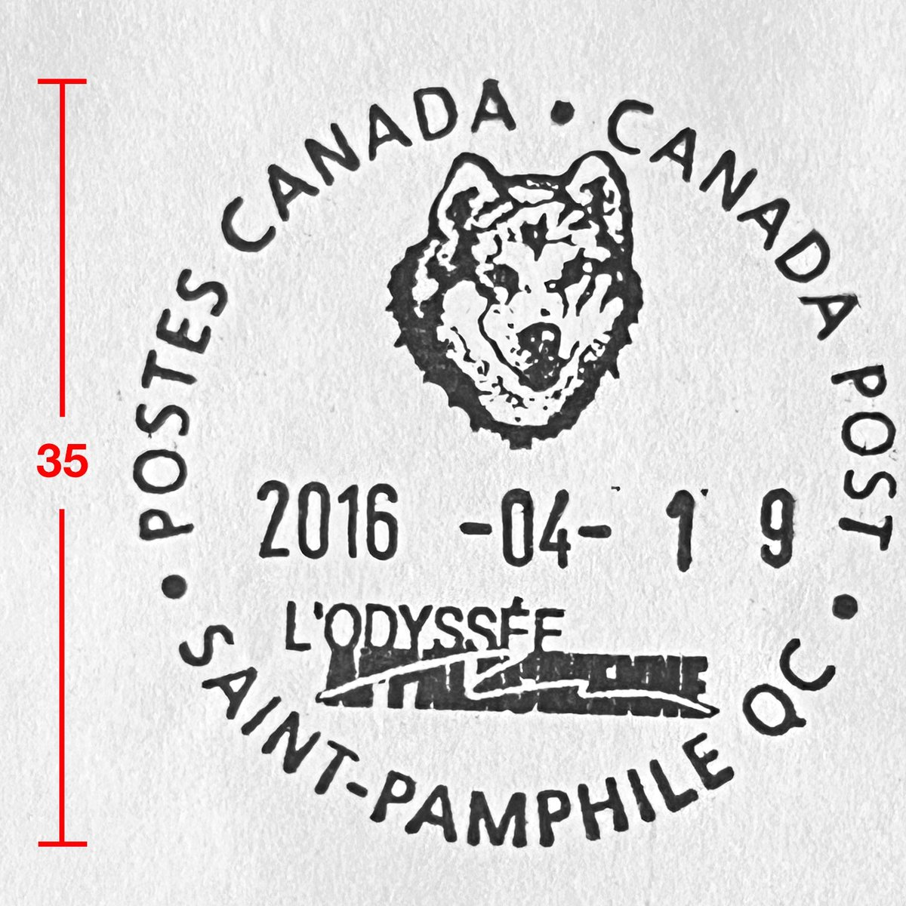

BP St-Pamphile pictorial cancel
L'Odyssé Appalachienne · Dog
- Status
- Expired
- Run dates
- 2005-01-01 to 2016-12-31
- Design
- "L'ODYSSÉ APPALACHIENNE"; dog
- Ink colour
- Black
- Designer
- Unknown
- Post office
- BP St-Pamphile
95 Rue du Foyer N
Saint-Pamphile, QC
G0R 3X0 - Subjects
- animal, mammal, canine
This cancel is retired, so the post office can no longer apply it. Covers with it turn up from dealers and other collectors.
 BP St-PamphileMoose
BP St-PamphileMoose Montmagny Succ Bureau-ChefAccordion
Montmagny Succ Bureau-ChefAccordion Montmagny Succ Bureau-ChefGoose
Montmagny Succ Bureau-ChefGoose Montmagny Succ Bureau-ChefGoose 2025
Montmagny Succ Bureau-ChefGoose 2025 Rivière-du-Loup Bureau-ChefCapital de Noël! 1er week-end de novembre
Rivière-du-Loup Bureau-ChefCapital de Noël! 1er week-end de novembre BP Québec Haute-VilleHaunted Canada
BP Québec Haute-VilleHaunted Canada